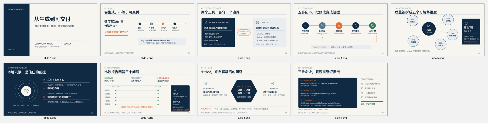

PPTLINT / LOCAL POWERPOINT CHECK
Is this PowerPoint ready to send?
AI can make a presentation quickly. PPTLint checks the finished PPTX for missing content, clipped or overlapping text, flattened slides, notes, comments, and personal information.
Your file stays on your computer. PPTLint does not call an AI model or change the source file.
Ask your coding agent
Install PPTLint and check whether this PowerPoint is ready to send. Show me the slides I must fix first and the exact PowerPoint steps.
pptlint check output.pptx --profile ai-generated
One answer, then the next three actions
A real editable PowerPoint improvement
Ultimate PPT Master created a nine-slide editable presentation. The first check exposed broken internal relationships and other delivery risks. After focused changes, all score deductions were removed. PPTLint still asks the user to review speaker notes and keeps three possible overlaps as suggestions rather than blockers.
49 → 100before and after
103reported items resolved
0new high-confidence problems

The original files and complete offline reports are published so anyone can inspect the evidence.